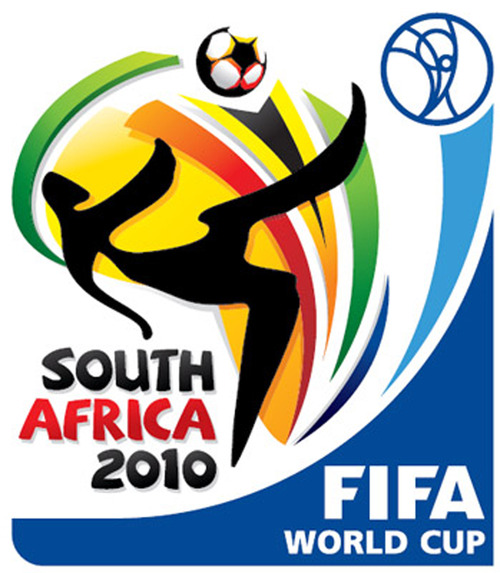

 As I was sitting at a local watering hole with a few friends watching the World Cup’s Japan v. Denmark game, the discussion quickly turned to the upcoming knock out game between the U.S. and Ghana. Being that we were all of Ethiopian descent, the fanfare was leaning towards Ghana, the only remaining African team. Except for me that was, as I was a little conflicted, being that the U.S. is now my home and I have no ties to Ghana, other than the fact that we share a continent. No shocker as to where my friends were leaning, except for the vehemency in which they were rooting for the U.S. team’s demise. They were quite adamant in wanting the U.S. to fail. This struck a chord with me. Why are so many refugees at odds with their now resident nation? Why do we so often take pleasure in the failure of this country that has taken us in with such open arms? Don’t get me wrong… I’m not so naive that I see no fault in the U.S. and their dealings with foreign policy. I find the U.S. conflicts in the Middle East quite abhorrent and despise their indifference to the atrocities in Africa and other regions of the world, where the U.S. has no vested interest. But I still CHOOSE to remain here. Just as I CHOSE to move to the U.S. from my native Ethiopia in the mid 90’s. I chose to come here, because I felt I would have a better life here. And this still remains true. I am not arguing that life is better here for everyone, rather than their native lands… but it’s true for me and my family. So I continue to remain here. In a few years, I would have been a resident of the U.S. for a larger portion of my life than my native land. I still view myself as an Ethiopian first and will continue to do so for the remainder of my days, but I do feel a certain level of allegiance to these here United States. This is where I’ve got my education and earn my living. This is where I see myself living out my days and raising my family. Happily. Is it so wrong to feel a sense of loyalty to my new home?
My cousin shared an experience with me that had him quite perplexed. He was at work watching the U.S. v. Slovenia game with a bunch of his American co-workers in the cafeteria. The vast majority of the people the people watching were Americans, except for 2 young ladies from Ethiopia, who worked in the cafeteria. The mood was quite electric until Slovenia scored the first goal to take the lead. The crowd was quite deflated and seemed to have the collective wind knocked out of them as their hopes of advancing to the next round seemed to be hanging by a thread. Except for the 2 young ladies, who seemed unable to control their elation and screamed out with joy. They relished at the opportunity to give each other high fives and celebrate loudly in the now dejected silence of the cafeteria. He could only watch in shock as they seemed to take joy in the annoyance of the mostly American crowd. Now, had this been the Ghana v. U.S. game, I can understand and somewhat justify their actions. After all, it is a fellow African nation. The last remaining one at that. In the first ever World Cup hosted by an African nation. But that wasn’t the case. It was Slovenia. A nation few outside of Slovenia had ever heard of. A nation with no ties to Africa, let alone our native Ethiopia. So why the elation? Why so much joy at the prospect of them defeating the U.S., a nation that they reside in?
As the game wore on and Slovenia scored again, they again were unable to contain themselves and danced around with joy ululating as if their future depended on it. My cousin approached them and inquired as to why they were taking such joy in this now seeming downfall of the U.S. team. Did they have relatives in Slovenia? Did they have a vested interest in their victory? A bet perhaps? To which they replied ‘No’. They had never heard of the country before that day. They barely had any interest in Soccer as a whole. They just relished the joy of watching the Americans fans so dejected at the prospect of their World Cup dreams coming to an end. 'Yebelwachew’ ('Let them beat them’) they went on to explain, expressing their joy of such an outcome. This astounded him even more and he asked why they would want such a fate for the nation that they now live in. A nation they came to with free will, looking for a better future for themselves and their families. Such is the case for most, if not all refugees here. To the best of my knowledge, there are no refugees forced to live here. There are several that were forced to leave their native lands due to political instabilities, lack of opportunities, etc. But none that were forced by U.S. to relocate here. So why the relentless desire to see them fail?This is only a friendly competition in the single biggest stage of them all. No policies are set here. No western governments to impede the growth of smaller nations. No use of incomparable force to subdue weaker nations. This is just a game. If it is a matter of us against the powerful western world, then why does Europe enjoy such fanfare from Africans? Why are we so quick to pick European teams as our own? 'I’m rooting for Italy’… 'Germany is my team’… 'England all the way!!’. Really? If anything, shouldn’t we Africans be anti-Europe? The continent that had for generations colonized Africa and have direct responsibility for Africa current dismal state? Should we not be aligned against them? And if not for historical and political reasons, how about how they unfairly dominate the World Cup placements? 8 countries from the Americas… 6 from Africa… 3 from Asia… none from the Middle East and an astounding 13 from Europe!! How much more biased can the World Cup be? I’m ecstatic that only 6 now remain and whole heartedly root for any team that can knock out another European team. I was beside myself when France and Italy were knocked out in the first round. I am now excitedly awaiting the Germany v. England and Spain v. Portugal games, for I know that 2 more European team are destined to go home! At least my bias has some basis in that I feel the European teams unfairly dominate the World Cup seedings.
But I digress. The purpose of this rant was questioning why we are so biased against the U.S.A. I, for one, was rooting for them. I was quite impressed with their play thus far, against all odds. Twice they were denied goals that would have given them victories and cemented their dominance of their group. And yet they prevailed. I’ve always been one to side with an underdog and found one in the U.S. I was quite impressed by how they relentlessly pushed on and ended at the top of their group. But, as I mentioned before, Saturday’s game is a conflicting one for me. Being as to the match being against Ghana, the last remaining African team. In the first ever World Cup hosted by an African nation. Which, I might add, has done an impeccable job hosting, to make any and all Africans proud.
So for this game, I will remain unbiased and will take equal joy in either team advancing. But I will pledge my allegiance to whomever is to move on and will wholeheartedly support them the rest of the way!